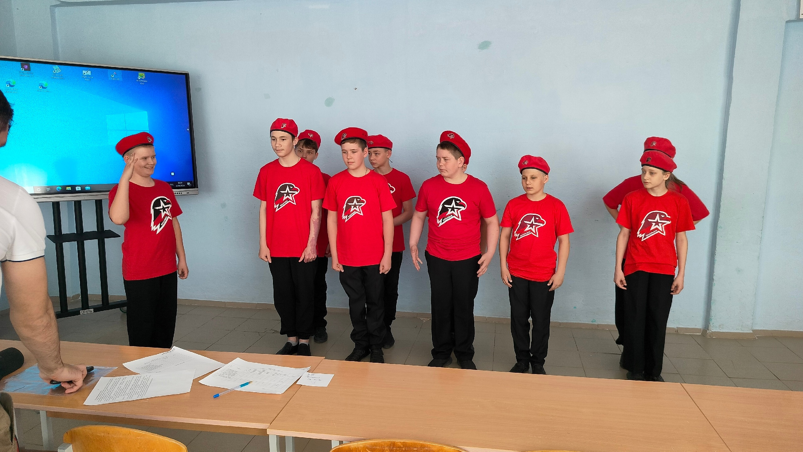
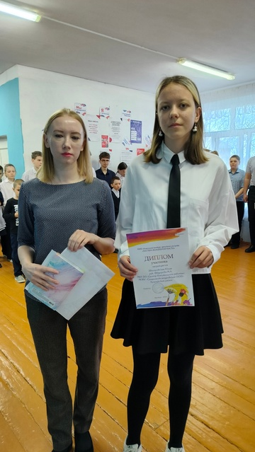
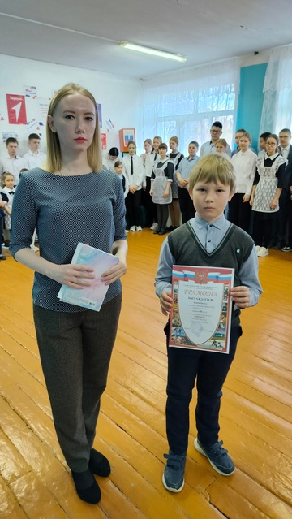

Староалександровская ООШ
Бузулукский район
Оренбургская область
🥇Достижения нашей школы🥇

По итогам муниципального этапа
военно-спортивной игры Зарница 2.0
МОБУ "Староалександровская ООШ" - 🏆1 место

Итоги муниципального этапа
военно-спортивной игры Зарница 2.0
МОБУ "Староалександровская ООШ"-🏆1 место

Участие в Областном конкурсе рисунков
"Мастера волшебной кисти"
🥇Звензловская Юлия - 1 место
Участие в Областном конкурсе творческих работ
"Здоровячок"
🥈Кащеев Никита - 2 место